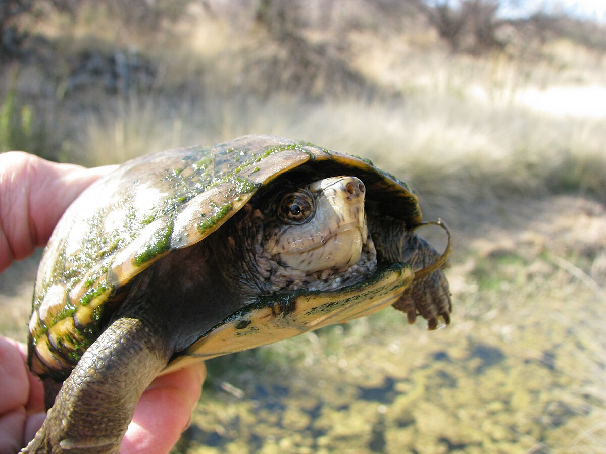
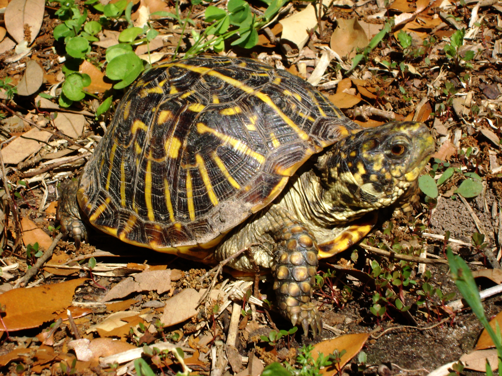

Turtles
Also known as Testudine
Turles are any of an order (Testudines synonym Chelonia) of terrestrial, freshwater, and marine reptiles that have a toothless horny beak and a shell of bony dermal plates usually covered with horny shields enclosing the trunk and into which the head, limbs, and tail usually may be withdrawn.(https://www.merriam-webster.com/dictionary/turtle)

Sonoran Mud Turtles

image of a Sonoran Mud Turtle, taken by Richard Bonnett
- Habitat: Found in oasis-like environments such as Quitobaquito Springs, these turtles rely on limited water sources in the desert.
- Shell Design: Their domed shells are adapted for protection, and they have webbed feet for semi-aquatic lifestyles.
- Endangered Status: They are among the endangered species in the Sonoran Desert, highlighting the importance of conservation efforts.
Ornate Box Turtle
- Habitat: Lives in desert grasslands and uses desert burrows to avoid extreme temperatures.
- Shell Design: Both the upper and lower shell has yellow and brown lines with reddish spots on its front legs.
- Diet: Consumes primarily fruit, insects, and leaves. (https://www.nps.gov/sagu/learn/nature/turtles-and-tortoises.htm)
Quiz Time!
Can you identify this turtle?

image of turtle by Patrick Feller